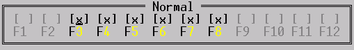

Jouri Mamaev
![[jourim@usue.ru]](../../images/email.gif) jourim@usue.ru
jourim@usue.ru
Jouri Mamaev
jourim@usue.ru
Одним из удобных, да и очевидных, способов описания статического, т.е. полностью обрабатываемого ФАРом диалога является следующий:
bool DoConfigure( void )
{
static FarDialogItem itm[] = {
{ DI_CHECKBOX, 1, 1, 0, 0, 0, NULL, 0, 0, "&Enabled" },
{ DI_TEXT, 1, 2, 0, 0, 0, NULL, DIF_LEFTTEXT, 0, "&Activators" },
{ DI_CHECKBOX, 2, 3, 0, 0, 0, NULL, DIF_GROUP, 0, "Control" },
{ DI_CHECKBOX, 2, 4, 0, 0, 0, NULL, 0, 0, "Alt" },
{ DI_CHECKBOX, 2, 5, 0, 0, 0, NULL, 0, 0, "Shift" },
{ DI_BUTTON, 2, 6, 0, 0, 0, NULL, 0, 0, "&OK" },
{ DI_BUTTON, 12, 6, 0, 0, 0, NULL, 0, 0, "&Cancel" },
};
//Заполнение данных элемента диалога реальными данными плагина
...
//Выполнение диалога
if ( Info.Dialog( Info.ModuleNumber,-1,-1,25,15,NULL,
itm,sizeof(itm)/sizeof(itm[0]) ) == -1)
return false;
//В случае успешного завершения диалога получение отредактированных
// пользователем данных
return true;
}
Однако те, кто писал (и закончил) свой плагин, после того как проходит эйфория от выполненной работы, замечают несколько "проблем" такого подхода.
Не помогают ни оптимизация плагина, не подключение динамического RTL-а, ни шаманство с объединением кодовых секций и изменения их выравниваний на этапе линковки.
Становится немного обидно, что плагин, который делает всего ничего занимает место столько же, что и соседний, который делает черти-что, да еще и с бантиками...
Для "добывания" этих строк нужно использовать функцию АПИ ФАРа
char *GetMsg( int LanguageStringNumber );
Казалось бы ничего сложного, но использование этого метода, с тем подходом, который использовался при создании диалогов, порождает достаточно большую массу текста никак не связанного с тем, что делает плагин и только ухудшает читабельность и возможности модификаций такого текста.
Дополнительным минусом является то, что интернациональная поддержка нужна только конечному пользователю, а в процессе написания и редактирования диалога она только мешает, заставляя перелопачивать абсолютно не относящийся к логике работы плагина текст.
Используя статические переменные в программе, независимо от места их описания и использования, вы неявно даете указание компилятору и линкеру поместить их в отдельный кодовый сегмент данных, производимого выполняемого файла.
Это бы ничего т.к. использование, к примеру:
static char GlobalBuff[ 100000 ];не должно, и не влияет на размер выполняемого файла, т.к. данные создаются и существуют только в памяти, в момент загрузки программы операционной системой.
Но изменив описание на такое:
static char GlobalBuff[ 100000 ] = "ABC";ваша программа увеличилась в размере на 100Кб.
В нашем случае наблюдается именно эта ситуация, т.к. из-за того, что данные были явно инициализированы значениями, линкеру приходится их реально записывать в выполняемый файл.
Посмотрим на размер данных, которые мы заставляем линкер приписывать к программе, инициализируя элементы диалога.
Выполнить эту операцию можно по разному, начиная от разглядывания карты связей линкера, кончая тривиальным:
#include "plugin.hpp" printf( "%d\n",sizeof(FarDialogItem) );Т.к. точные цифры нас интересуют слабо, то поступим проще - нажмем F4 на plugin.hpp и посмотрим на описание структуры FarDialogItem.
В ряду с остальными элементами мы там обнаружим следующее:
char Data[512];Т.е. любой элемент диалога занимает более 500 байт данных в любом случае.
Легко подсчитать, что если у вас описан диалог из 20 элементов, и плагин занимает 10К, то ровно половину этого объема занимают статические данные массива элементов FarDialogItem, в каждом из которых используется не более десятка букв и несколько цифр.
Задачи, которые хотелось бы уметь решать:
Идеальным решением было бы такое средство, когда строки пишутся как обычно, без оглядки на их последующую замену, а потом, когда плагин окончательно готов, нажать на какую-нибудь чудо-кнопку и получить возможность их полного изменения.
Создание такой чудо-кнопки сложностей не представляет, но это будет средство, которое будет во многом зависеть от того, в каких условиях и какими средствами плагин создается и, поэтому, рассмотрение его выходит за рамки этой "статьи".
Рассмотрим более простое, не лишенное минусов, но могущее значительно облегчить описанную проблему, средство.
Вашему вниманию представляется, как было заявлено в начале статьи, объектно-ориентированные средства для решения поставленных задач. Эти решения не есть идеал, и ни в коей мере не указание к немедленному применению.
Эти средства не являются необходимыми для написания плагинов к ФАРу. Это всего лишь один из способов облегчения процесса написания плагинов.
В исходных текстах, приведенных здесь, для уменьшения количества текста и облегчения читабельности, используется несколько макросов, которые приведены в приложении.
Те, кто заглядывал в заголовочные файлы windows, или имел
счастье писать диалоговые программы под эту операционную среду помнят такой
макрос как MAKEINTRESOURCE.
Его можно использовать для реализации механизмов поддержки языков в плагинах.
Для этого нужно написать тройку макросов и одну функцию:
#define FLANGID( v ) ((CONSTSTR)MK_DWORD(0xF5F5,v)) #define FISID( v ) (LO_WORD((DWORD)(v)) == 0xF5F5) #define FGETID( v ) (HI_WORD((DWORD)(v))) extern CONSTSTR FGetMsg( CONSTSTR String );Где:
Для использования нам пригодится только FLANGID, остальные используются самой процедурой FGetMsg.
На том этапе, когда плагин будет готов, и вы будете заниматься перенесением строк из текста программы в языковой файл достаточно будет поменять, к примеру:
const char *Message = "Not enouth";на
const char *Message = FLANGID( LNG_NotEnouth );
Использовать этот указатель как обычную строку, не зависимо от того чем это значение реально является - номером или строкой, позволяет функция FGetMsg:
CONSTSTR FGetMsg( CONSTSTR String ) {
if ( FISID(String) )
return Info.GetMsg(Info.ModuleNumber,FGETID(String));
else
return String;
}
Для более корректной обработки возможных ошибок, можно добавить первой строчкой в эту функцию:
Assert( String );или
if ( !String ) return "";В зависимости от того, какой реакции от функции вы хотите.
Первое что нужно сделать - это придумать небольшую, по занимаемому, объему памяти, но достаточно функциональную замену структуры FarDialogItem, которая будет использоваться для инициализации элементов интерфейса.
Проанализировав использующиеся у меня диалоги, и рассмотрев необходимые поля, которые она должна содержать, я реализовал ее так:
#define FFDI_FOCUSED 0x00010000UL #define FFDI_SELECTED 0x00020000UL #define FFDI_DEFAULT 0x00040000UL STRUCT( FDialogItem ) DWORD Type; int X1; int Y1; int X2; int Y2; DWORD Flags; CONSTSTR Text; };
Где флаги FDI_XXX добавляются к типу объекта и заменяют соответствующие названию поля оригинальной структуры, т.к. во-первых, нужны они далеко не всегда, и, во-вторых, раз уж заниматься минимизацией, то это барство - для хранения одного бита использовать 32.
Т.к. изначально, стояла задача минимального изменения кода существующих плагинов, то реально работать мы будем продолжать со структурой FarDialogItem, а FDialogItem будет использоваться только для описания статических данных элементов.
Дополнительно, с целью уменьшить количество текста вида "0,0,0,..." можно использовать макросы для целевого описания типовых элементов диалога.
#define FDI_CONTROL( tp,x,y,x1,y1,fl,txt ) { tp,x,y,x1,y1,fl,txt }
#define FDI_LABEL( x,y,txt ) FDI_CONTROL( DI_TEXT,x,y,0,0,0,txt )
#define FDI_COLORLABEL( x,y,clr,txt ) FDI_CONTROL( DI_TEXT,x,y,0,0,DIF_SETCOLOR|(clr),txt )
#define FDI_EDIT( x,y,x1 ) FDI_CONTROL( DI_EDIT,x,y,x1,y,0,NULL )
#define FDI_DISABLEDEDIT( x,y,x1 ) FDI_CONTROL( DI_EDIT,x,y,x1,y,DIF_DISABLE,NULL )
#define FDI_CHECK( x,y,txt ) FDI_CONTROL( DI_CHECKBOX,x,y,0,0,0,txt )
#define FDI_RADIO( x,y,txt ) FDI_CONTROL( DI_RADIOBUTTON,x,y,0,0,0,txt )
#define FDI_STARTRADIO( x,y,txt ) FDI_CONTROL( DI_RADIOBUTTON,x,y,0,0,DIF_GROUP,txt )
#define FDI_BUTTON( x,y,txt ) FDI_CONTROL( DI_BUTTON,x,y,0,0,0,txt )
#define FDI_DEFBUTTON( x,y,txt ) FDI_CONTROL( DI_BUTTON|FFDI_DEFAULT,x,y,0,0,0,txt )
Их назначение:
Пример использования описания диалога, используя эту структуру хранения:
bool DoConfigure( void )
{
static FDialogItem itm[] = {
FDI_CONTROL( DI_SINGLEBOX, 0, 0,70,14, 0, "Caption" ),
FDI_DEFBUTTON( 58,13, " O&K " ),
FDI_LABEL( 2, 1, "&Options" ),
FDI_CHECK( 3, 2, "Show hidden files" ),
FDI_LABEL( 10, 5, "Tree &width" ),
FDI_EDIT( 5, 5, 8 ),
FDI_LABEL( 38, 1, "&Action functional keys" ),
FDI_BUTTON( 39, 2, "&Normal" ),
FDI_BUTTON( 39, 3, "&Control" ),
FDI_BUTTON( 39, 4, "A<" ),
};
...
}
Очень похоже на оригинал за тем исключением, что немного более читабельно, не так ли ?
Вторая задача, которую нужно решить это реализация некоего интерфейса, который бы позволил хранить массивы структур FarDialogItem, используя для их инициализации данные из FDialogItem.
ФАР требует, чтобы элементы которые будут переданы в Dialog были расположены в непрерывном массиве.
Т.к. нас интересует результат, то не стоит противоречить этому требованию.
Для реализации этой организации можно использовать разные методы, от глупостей типа:
static FarDialogItem *LastItems = NULL; FarDialogItem *AllocFarDialogItems( int Count );до реализаций массивов из STL.
Первого я боюсь, а второе ненавижу, поэтому остановимся на среднем варианте.
Для реализации массива используем шаблон с нужной нам функциональностью:
template <class T> class RefArray {
T *items;
int count;
public:
MyRefArray( int Count ) { items = new T[ count = Count ]; memset(items,0,sizeof(T)*count); }
virtual ~MyRefArray() { delete[] items; }
T *Item( int num ) const { return (T*)((num >= 0 && num < count)?(items + num):NULL); }
T *operator[]( int num ) const { return Item(num); }
int Count( void ) const { return count; }
T *Items( void ) const { return (T*)items; }
};
И организуем работу с нашими данными, используя этот шаблон:
class FDialog : public RefArray<FarDialogItem> {
public:
FDialog( int NumElemens );
FDialog( int NumElemens,PFDialogItem Elements,int FNumElements = -1 );
PFarDialogItem Setup( int num,const FDialogItem& p );
void Setup( int From,PFDialogItem p,int count );
int Execute( int w,int h,CONSTSTR Help = NULL );
};
который умеет следующее:
Реализация методов описана ниже. Обратите внимание на то, что в функции FDialog::Setup используется
StrCpy( p->Data,FGetMsg(it.Text),sizeof(p->Data) );т.е. строка, которую задали в структуре FDialogItem может быть как реальной константной строкой, так и результатом использования макроса FLANGID. Таким образом, чтобы сделать диалог с поддержкой языков средствами ФАР нужно всего лишь изменить явное использование строки на макрос FLANGID с той константой, которую вы будете использовать для этой строки.
FDialog::FDialog( int NumElemens )
: RefArray<FarDialogItem>(NumElemens)
{}
FDialog::FDialog( int NumElemens,PFDialogItem Elements,int FNumElements )
: MyRefArray<FarDialogItem>( NumElements )
{
Setup( 0,Elements,(FNumElements==-1)?NumElements:FNumElements );
}
void FDialog::Setup( int From,PFDialogItem p,int ECount )
{
for ( int n = 0; n < ECount; n++ )
Setup( From+n,p[n] );
}
PFarDialogItem FDialog::Setup( int num,const FDialogItem& it )
{ PFarDialogItem p = Item(num);
if ( !p ) return NULL;
p->Type = (int)(it.Type & 0xFFFF);
p->X1 = it.X1;
p->Y1 = it.Y1;
p->X2 = it.X2;
p->Y2 = it.Y2;
p->Focus = IS_FLAG(it.Type,FFDI_FOCUSED);
p->Selected = IS_FLAG(it.Type,FFDI_SELECTED);
p->Flags = it.Flags;
p->DefaultButton = IS_FLAG(it.Type,FFDI_DEFAULT);
strcpy( p->Data,FGetMsg(it.Text),sizeof(p->Data) );
return p;
}
int FDialog::Execute( int w,int h,CONSTSTR Help )
{
return Info.Dialog( Info.ModuleNumber,-1,-1,w,h,
(char*)Help,
(PFarDialogItem)Items(),
Count() );
}
Рассмотрим функцию, которая запрашивает у показывает пользователю набор всех функциональных клавиш и позволяет отметить некоторые из них.
Выглядит на экране ФАРа это так:

Эту функцию можно использовать, к примеру, в панельном плагине, для задания маски переопределяемых плагином функциональных клавиш. В качестве параметров эта функция принимает текстовое сообщение, которое будет отображаться в заголовке диалога, маску текущих выбранных и маску недоступных для выбора функциональных клавиш.
Обратите внимание на то, что в статических данных находится только один элемент - рамка диалога, остальные формируются во время выполнения при первом вызове этой функции используя знание о том, что все "пустые" элементы диалога будут установлены как элементы с типом 0.
bool GetKeyMaskDialog( CONSTSTR KeyName,DWORD& Mask,DWORD Hide )
{ static FDialogItem itm = FDI_CONTROL( DI_DOUBLEBOX,0,0,50,3,0,NULL );
static FDialog dlg( FK_MAX*2+1,&itm,1 );
int n;
PFarDialogItem it;
DWORD dw;
#define IT_CAPTION 0
#define IT_FN 1
//Create FKey labels
if ( dlg[IT_FN]->Type != DI_RADIOBUTTON )
for ( n = 0; n < FK_MAX; n++ ) {
//Labels
it = dlg[ IT_FN + n*2 ];
it->Type = DI_TEXT;
it->X1 = 2 + n*4;
it->X2 = 2 + n*4 + 4;
it->Y1 = it->Y2 = 2;
if ( n < 9 )
sprintf( it->Data,"F&%d",n+1 );
else
sprintf( it->Data,"F%d",n+1 );
//Radio
it = dlg[ IT_FN + n*2 + 1 ];
it->Type = DI_CHECKBOX;
it->X1 = 2 + n*4;
it->X2 = 2 + n*4 + 4;
it->Y1 = it->Y2 = 1;
}
//Setup
strcpy( dlg[IT_CAPTION]->Data,FGetMsg(KeyName) );
for ( n = 0; n < FK_MAX; n++ ) {
it = dlg[IT_FN + n*2 ];
it->Flags = IS_FLAG(Hide,1UL<<n)?DIF_DISABLE:0;
it = dlg[IT_FN + n*2+1 ];
it->Selected = IS_FLAG(Mask,1UL<<n);
it->Flags = IS_FLAG(Hide,1UL<<n)?DIF_DISABLE:0;
}
//Dialog
n = dlg.Execute( 50,3,NULL );
if ( n == -1 ) return false;
//Grab data
dw = 0;
for ( n = 0; n < FK_MAX; n++ )
if ( dlg[IT_FN + n*2+1 ]->Selected ) SET_FLAG( dw,1UL<<n );
if ( dw != Mask ) {
Mask = dw;
return true;
} else
return false;
}
Здесь приведены реализации макросов, которые используются с приведенных исходных текстах, для сокращения записи.
#define MAX_WORD ((WORD)0xFFFFU)
#define MK_WORD( lb,hb ) ((WORD)(((((WORD)(hb))&0x00FFU) << 8) |(((BYTE)(lb))&0x00FFU)))
#define MK_DWORD( lw,hw ) (((((DWORD)hw)&0x0000FFFFUL) << 16) |(((WORD)lw)&0x0000FFFFUL))
#define MK_ID( v,v1,v2,v3 ) MK_DWORD( MK_WORD(v,v1),MK_WORD(v2,v3) )
#define PRESTRUCT( cl ) typedef struct cl *P##cl; struct cl
#define PRECLASS( cl ) typedef class cl *P##cl; class cl
#define STRUCT( name ) PRESTRUCT(name) {
#define CLASS( name ) PRECLASS(name) {
#define IS_FLAG( val,flag ) (((val)&(flag))==(flag))
#define SET_FLAG( val,flag ) (val |= (flag))
#define CLR_FLAG( val,flag ) (val &= ~(flag))
#ifndef bool
#define bool BOOL
#define true TRUE
#define false FALSE
#endif
typedef const char *CONSTSTR;
21.02.2001